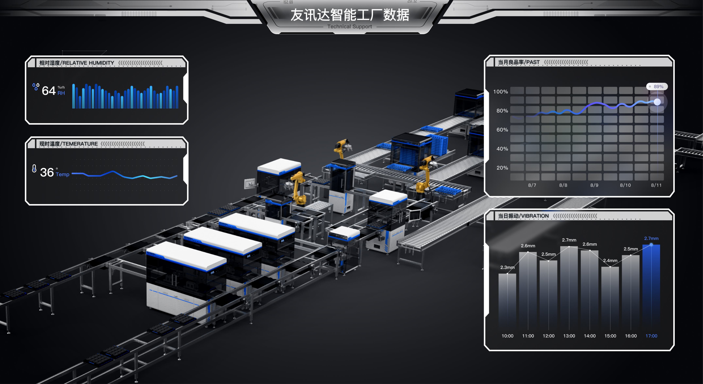
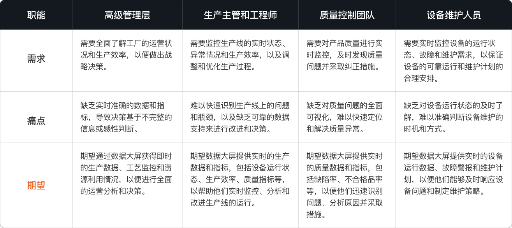

主导设计"友讯达数据大屏"。投入运用后生产效率显著提升， 客户满意度高——满意度 1 至 10 分中，给予 6 分及以上的人数占 79%， 其中给予 10 分满分的占 31%。
庞大的生产数据基准上，友讯达期望提升生产数据的价值的同时降低数据分析成本。 项目涉及到生产数据设计可视化效果，并设想通过可视化设计能够实现数据驱动的生产管理， 从而达到提升效率、降低成本、优化资源利用率以及实现实时决策支持的商业目标和意义。
客户企业拥有大量底层数据，将数据能力有效透出，从而实现数据的价值。 传统的方式存在查询难度大、数据分析专业要求高、成本高、时间慢等问题。
在 2 个月内，我们要选择重点展示内容与方向，结合平台优势， 让这个项目成为公司 TOB 产品平台化的标杆与产品化能力。
通过智能工厂数据可视化的方式实现数据价值与展现实力。 采用图表可视化与生产数据联动的方式解决数据无法及时传递的问题。 用设计升华数据价值，用数据驱动产品链接。
用户访谈获得设计策略

开始没有准确的项目资料，通过访谈客户安排的管理、生产主管与工程师、 质量控制团队、设备维护等职能的相关工作人员，获得了以下信息：
"无实时准确的数据和指标，只能基于不完整的信息或感性判断进行决策。"
"设备运行状态不及时上报，难以准确判断设备维护的时机和方式。"
"无质量问题的可视化分析，难以快速定位和解决质量异常。"
"无法快速处理生产线上的问题和瓶颈，缺乏可靠的数据来进行支持改进方案与决策。"
虽然访谈对象的职责各不相同，但是共同期望通过数据大屏获得实时、准确的生产数据和指标， 以便进行运营分析、决策制定和问题解决。
我们如何设计可视化数据大屏，才能有效的做到数据传递，实现数据价值？
采用整洁、直观的布局，将关键数据指标和图表以明确的方式展示。 将不同的数据模块分组，按照相关性或层级进行排列，以便用户快速浏览和理解。 使用明显的标题、副标题和标签，帮助用户更好地理解各数据模块的含义和关系。
选择符合工厂品牌主题的配色方案，确保数据大屏与整体环境和企业形象相协调。 用明亮和鲜艳的色彩突出重要数据，例如红色或橙色表示警报或异常情况，绿/蓝色表示正常运行等。 保持色彩的一致性和对比度，以确保数据的可读性和可视化效果。
结合数据大屏的技术特性，采用科技感强的视觉风格，体现出数据驱动和高效精准的产品特性。 视觉元素保持简洁与克制，避免过度装饰，让数据本身成为视觉焦点，传递真实有效的信息价值。
选用高可读性字体，确保在大屏环境下数字和文字的清晰辨识。 数值和关键指标使用显著的字号和字重，标题与正文保持清晰的字体层级， 在视觉上形成自然的信息阅读优先级。
利用动画效果展示实时数据的变化趋势，例如通过柱状图、线图或雷达图的动态增长和缩小， 突出关键指标的变化。通过颜色渐变、闪烁或图标旋转等动画效果，吸引用户注意力，快速传递信息。
通过动态图表和流程图，实时呈现生产线各环节的运行状态， 使管理人员可以直观了解整体生产流程，及时发现瓶颈并做出调整。
支持用户通过筛选、钻取和对比等方式对数据进行深度分析， 满足不同职能人员对数据的差异化需求，提升数据探索效率。
允许用户根据个人偏好自定义大屏布局和关注指标，并保存配置方案， 以便快速切换不同的监控视图，提升日常使用效率。
设定关键指标的阈值，当数据异常时自动触发视觉告警和消息推送， 帮助相关人员及时响应和处理生产异常，降低故障影响时间。
我们不断收集和分析用户的反馈和行为数据，了解用户需求，发现问题， 并针对性地进行设计改进和优化。这样的循环反馈过程可以帮助我们逐步提升数据大屏的设计效果 和用户满意度，确保其能够真正满足用户的需求，提供有价值的数据展示和管理工具。